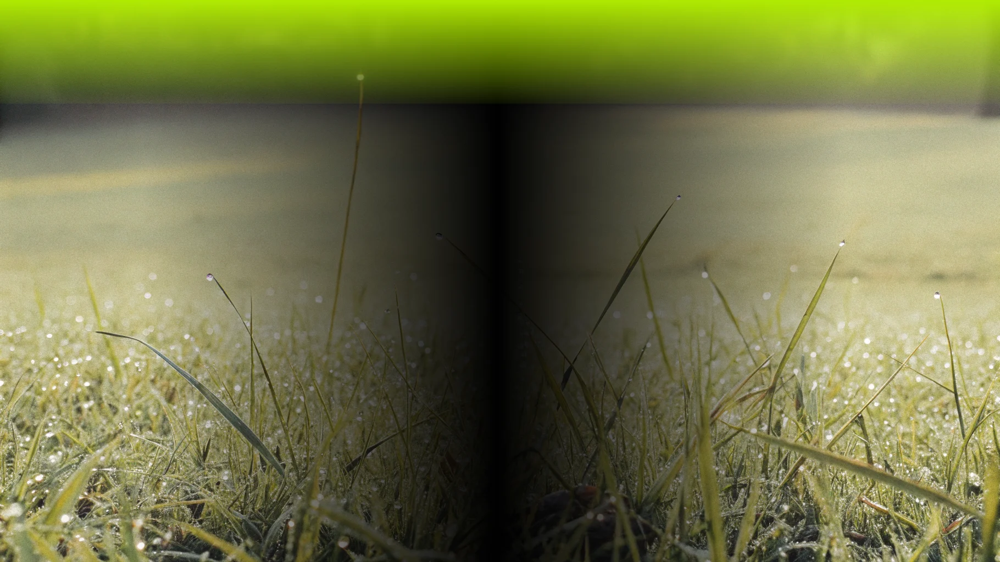

Как использовать природные сигналы для планирования сада или огорода: советы для садоводов и дачников
1. Оцените почву и условия участка
Природные особeнности участка, такие как его влажность, тип почвы и освещенность, подскажут, какие растения лучше выбрать. Например, для болотистых участков подойдут влаголюбивые растения (калужница, ирис), а для сухих склонов — засухоустойчивые виды (тысячелистник, душица)
2. Прислушивайтесь к звукам природы
Звуки сада — шелест листьев, пение птиц, жужжание насекомых — помогут создать гармоничное пространство. Чтобы привлечь птиц и насекомых, посадите кустарники и цветы, а также создайте водоемы или поставьте кормушки
3. Используйте растения для защиты от шума
Если участок находится рядом с дорогой или шумным местом, высаживайте густые деревья и кустарники. Например, липа или рододендрон помогут снизить уровень шума до 10 дБ и создадут уютную атмосферу.